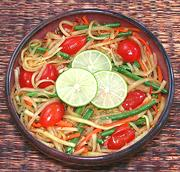

|
Green Papaya Salad #1Thailand - Som Tam Thai | ||||
| Makes: Effort: Sched: DoAhead: |
1-1/2# ** 45 min Yes |
Green Papaya Salads are perhaps the most famous of Thai salads, also popular in Vietnam and Laos. This version is a crunchy and very flavorful presentation salad. For a simpler version, see Green Papaya Salad #2. | |||
| These salads are normally made in a large clay mortar with a wooden pestle, using a special technique. If you don't have one of these mortars,you'll have to improvise (see Note-7). | |||||
|
12 2 3 6 3 3 2 ----- 3 1 3 3 ----- |
oz oz oz oz cl T --- T T T T --- |
Papaya, green. (1) Carrot Long Beans Grape Tomatoes Thai Chili (2) Garlic Dry Shrimp, small -- Dressing Tamarind paste (3) Palm sugar (4) Lime Juice Fish Sauce (5) --- Garnish Roasted Peanuts (6) - crushed. |
Prep - (30 minutes)
|